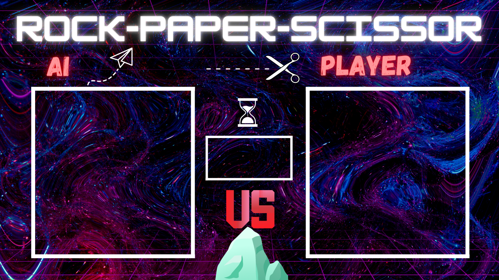

Rock Paper Scissors Game
Role: Backend Developer
Team: Collaborative project with university peers
Project Description:Developed a rock-paper-scissors game using OpenCV for hand gesture recognition. The game detects hand gestures in real-time through the webcam and determines the winner between the player and the AI. The application emphasizes accurate hand detection and gesture recognition to provide an interactive gaming experience.
Responsibilities:
- Hand Gesture Recognition: Implemented real-time hand detection and gesture recognition using OpenCV and the cvzone library.
- Game Logic: Developed the core game logic for rock-paper-scissors, including AI move generation and winner determination.
- User Interface: Integrated graphical elements and user interface components to display the game state and results.
- Testing and Debugging: Conducted thorough testing and debugging to ensure smooth and accurate gameplay.
Technologies Used: Python, OpenCV, cvzone, MediaPipe